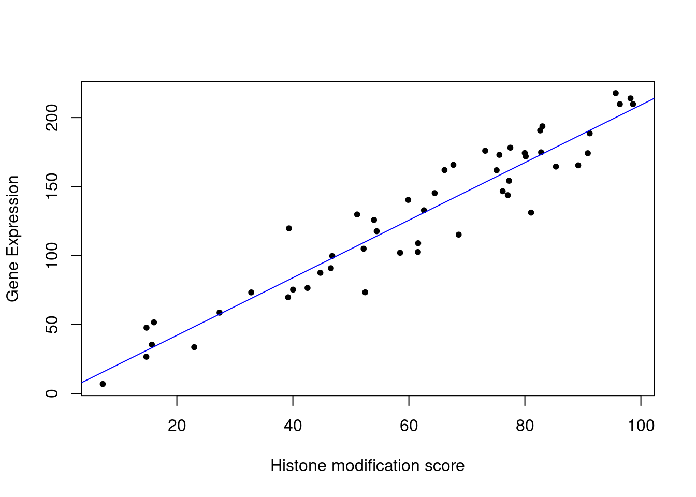
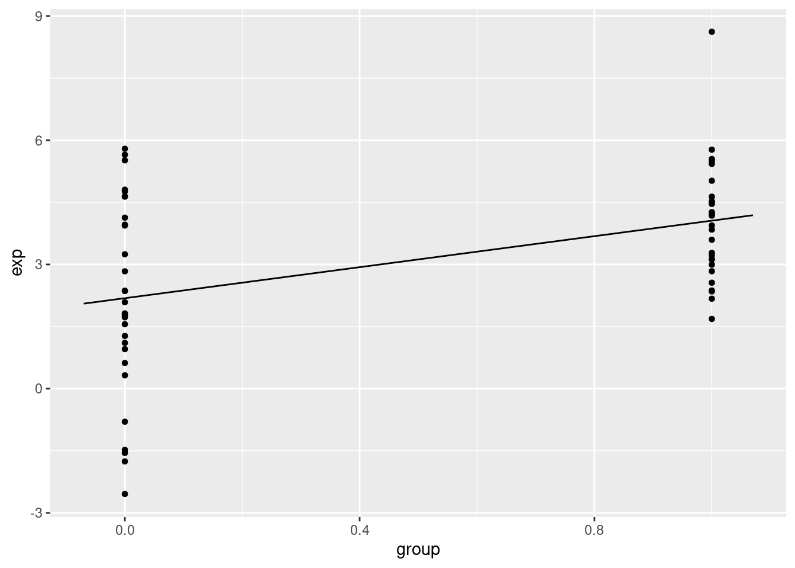

3.4 Relationship between variables: Linear models and correlation
Examples:
- want to know about expression of a particular gene in liver in relation to the dosage of a drug that patient receives
- DNA methylation of a certain locus in the genome in relation to the age of the sample donor.
- relationship between histone modifications and gene expression.
\[Y=\beta_0+\beta_1X+\epsilon\] Approximation of the response:
\[Y\sim\beta_0+\beta_1X\] Estimation of the coefficients:
\[Y=\hat{\beta_0}+\hat{\beta_1}X\]
More than one predictor:
\[Y=\beta_0+\beta_1X_1+\beta_2X_2+\epsilon\] \[Y=\beta_0+\beta_1X_1+\beta_2X_2+\beta_3X_3+...+\beta_nX_n+\epsilon\]
\[Y=\begin{bmatrix} 1 & X_{1,1} & X_{1,2}\\ 1 & X_{2,1} & X_{2,2}\\ 1 & X_{3,1} & X_{3,2}\\ 1 & X_{4,1} & X_{4,2} \end{bmatrix}\begin{bmatrix} \beta_0 \\ \beta_1 \\ \beta_2 \end{bmatrix}+\begin{bmatrix} \epsilon_1 \\ \epsilon_2 \\ \epsilon_3\\ \epsilon_0 \end{bmatrix}\]
\[Y_1=\beta_0+\beta_1X_{1,1}+\beta_2X_{1,2}+\epsilon_1\]
\[Y_1=\beta_0+\beta_1X_{2,1}+\beta_2X_{2,2}+\epsilon_2\]
\[Y_1=\beta_0+\beta_1X_{3,1}+\beta_2X_{3,2}+\epsilon_3\]
\[Y_1=\beta_0+\beta_1X_{4,1}+\beta_2X_{4,2}+\epsilon_4\]
\[Y=X\beta+\epsilon\]
3.4.1 The cost or loss function approach
Minimize the residuals: optimization procedure
\[min\sum{(y_i=(\beta_0+\beta_1x_1))^2}\]
The “gradient descent” algorithm”
Pick a random starting point, random \(\beta\) values.
Take the partial derivatives of the cost function to see which direction is the way to go in the cost function.
Take a step toward the direction that minimizes the cost function.
- Step size is a parameter to choose, there are many variants.
Repeat step 2,3 until convergence.
The algorithm usually converges to optimum \(\beta\) values.
Figure 3.1: Cost function landscape for linear regression with changing beta values. The optimization process tries to find the lowest point in this landscape by implementing a strategy for updating beta values toward the lowest point in the landscape.
3.4.2 The “maximum likelihood” approach
The response variable \(y_i\) follows a normal distribution with mean \(\beta_0+\beta_1x_i\) and variance \(s^2\).
Find \(\beta_0\) and \(\beta_1\) that maximizes the probability of observing all the response variables in the dataset given the explanatory variables.
constant variance \(s^2\), estimation of the variance of the population \(\sigma^2\)
\[s^2=\frac{\sum{\epsilon_i}}{n-2}\] Probability:
\[P(y_i)=\frac{1}{s\sqrt{2\pi}}e^{-\frac{1}{2}(\frac{y_i-(\beta_0+\beta_1x_i)}{s})^2}\]
Likelihood function:
\[L=P(y_1)P(y_2)P(y_3)..P(y_n)=\prod_{i=1}^{n}{P_i}\]
The log:
\[ln(L)=-nln(s\sqrt{2\pi})-\frac{1}{2s^2}\sum_{i=1}{n}{(y_i-(\beta_0+\beta_1x_i))^2}\] the negative of the cost function: \[-\frac{1}{2s^2}\sum_{i=1}{n}{(y_i-(\beta_0+\beta_1x_i))^2}\] to optimize this function we would need to take the derivative of the function with respect to the parameters.
3.4.3 Linear algebra and closed-form solution to linear regression
\[\epsilon_i=Y_i-(\beta_0+\beta_1x_i)\]
\[\sum{\epsilon_i^2}=\epsilon^T\epsilon=(Y-\beta X)^T(Y-\beta X)\]
\[= Y^TY-(2\beta^T Y + \beta^T X^T X\beta)\]
\[\hat{\beta}=(X^T X)^{-1}X^T Y\]
\[\hat{\beta_1}=\frac{\sum{(x_i-\bar{X})(y_i-\bar{Y})}}{\sum{(x_i-\bar{X})^2}}\]
\[\hat{\beta_0}=\bar{Y}-\hat{\beta_1}\bar{X}\]
# set random number seed, so that the random numbers from the text
# is the same when you run the code.
set.seed(32)
# get 50 X values between 1 and 100
x = runif(50,1,100)
# set b0,b1 and variance (sigma)
b0 = 10
b1 = 2
sigma = 20
# simulate error terms from normal distribution
eps = rnorm(50,0,sigma)
# get y values from the linear equation and addition of error terms
y = b0 + b1*x+ epsmod1=lm(y~x)
# plot the data points
plot(x,y,pch=20,
ylab="Gene Expression",xlab="Histone modification score")
# plot the linear fit
abline(mod1,col="blue")
3.4.4 How to estimate the error of the coefficients
Figure 3.2: Regression coefficients vary with every random sample. The figure illustrates the variability of regression coefficients when regression is done using a sample of data points. Histograms depict this variability for b0 and b1 coefficients.
The calculation of the Residual Standard Error (RSE)
\[s=RSE\]
mod1=lm(y~x)
summary(mod1)##
## Call:
## lm(formula = y ~ x)
##
## Residuals:
## Min 1Q Median 3Q Max
## -38.50 -12.62 1.66 14.26 37.20
##
## Coefficients:
## Estimate Std. Error t value Pr(>|t|)
## (Intercept) 0.40951 6.43208 0.064 0.95
## x 2.08742 0.09775 21.355 <2e-16 ***
## ---
## Signif. codes: 0 '***' 0.001 '**' 0.01 '*' 0.05 '.' 0.1 ' ' 1
##
## Residual standard error: 16.96 on 48 degrees of freedom
## Multiple R-squared: 0.9048, Adjusted R-squared: 0.9028
## F-statistic: 456 on 1 and 48 DF, p-value: < 2.2e-16# get confidence intervals
confint(mod1)## 2.5 % 97.5 %
## (Intercept) -12.523065 13.342076
## x 1.890882 2.283952# pull out coefficients from the model
coef(mod1)## (Intercept) x
## 0.4095054 2.08741673.4.5 Accuracy of the model
\[s=RSE=\sqrt{\frac{\sum{(y_i-\hat{Y_i})^2}}{n-p}}=\sqrt{\frac{RSS}{n-p}}\]
\[R^2=1-\frac{RSS}{TSS}=\frac{TSS-RSS}{TSS}=1-\frac{RSS}{TSS}\]
\[r_{xy}=\frac{cov(X,Y)}{\sigma_x\sigma_y}=\frac{\sum_{i=1}^n{(x_i-\bar{x})(y_i-\bar{y})}}{\sqrt{\sum_{i=1}^n{(x_i-\bar{x})^2\sum_{i=1}^n{(y_i-\bar{y})^2}}}}\]
Figure 3.3: Correlation and covariance for different scatter plots.
\[H_0:\beta_1=\beta_2=\beta_3=...=\beta_p=0\]
\[H_1:\text{at least one}\beta_1\neq0\]
The F-statistic for a linear model
\[F=\frac{(TSS-RSS)/(p-1)}{RSS/(n-p)}=\frac{(TSS-RSS)/(p-1)}{RSE}\sim{F(p-1,n-p)}\]
3.4.6 Regression with categorical variables
set.seed(100)
gene1=rnorm(30,mean=4,sd=2)
gene2=rnorm(30,mean=2,sd=2)
gene.df=data.frame(exp=c(gene1,gene2),
group=c( rep(1,30),rep(0,30) ) )
mod2=lm(exp~group,data=gene.df)
summary(mod2)##
## Call:
## lm(formula = exp ~ group, data = gene.df)
##
## Residuals:
## Min 1Q Median 3Q Max
## -4.7290 -1.0664 0.0122 1.3840 4.5629
##
## Coefficients:
## Estimate Std. Error t value Pr(>|t|)
## (Intercept) 2.1851 0.3517 6.214 6.04e-08 ***
## group 1.8726 0.4973 3.765 0.000391 ***
## ---
## Signif. codes: 0 '***' 0.001 '**' 0.01 '*' 0.05 '.' 0.1 ' ' 1
##
## Residual standard error: 1.926 on 58 degrees of freedom
## Multiple R-squared: 0.1964, Adjusted R-squared: 0.1826
## F-statistic: 14.18 on 1 and 58 DF, p-value: 0.0003905require(mosaic)
plotModel(mod2)
gene.df=data.frame(exp=c(gene1,gene2,gene2),
group=c( rep("A",30),rep("B",30),rep("C",30) )
)
mod3=lm(exp~group,data=gene.df)
summary(mod3)##
## Call:
## lm(formula = exp ~ group, data = gene.df)
##
## Residuals:
## Min 1Q Median 3Q Max
## -4.7290 -1.0793 -0.0976 1.4844 4.5629
##
## Coefficients:
## Estimate Std. Error t value Pr(>|t|)
## (Intercept) 4.0577 0.3781 10.731 < 2e-16 ***
## groupB -1.8726 0.5348 -3.502 0.000732 ***
## groupC -1.8726 0.5348 -3.502 0.000732 ***
## ---
## Signif. codes: 0 '***' 0.001 '**' 0.01 '*' 0.05 '.' 0.1 ' ' 1
##
## Residual standard error: 2.071 on 87 degrees of freedom
## Multiple R-squared: 0.1582, Adjusted R-squared: 0.1388
## F-statistic: 8.174 on 2 and 87 DF, p-value: 0.0005582